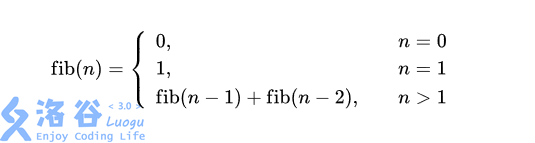

from functools import lru_cache @lru_cache(None) defNumberCount(n: int) -> int: if n == 1: return1 ans = 1# n 本身也是符合规则的 for i inrange(1, n // 2 + 1): ans += NumberCount(i) return ans
print(NumberCount(int(input())))
P1036 [NOIP2002 普及组] 选数
题目描述
已知 n 个整数 x1, x2, ⋯, xn，以及
1 个整数 k（k < n）。从 n 个整数中任选 k
个整数相加，可分别得到一系列的和。例如当 n = 4，k = 3，4 个整数分别为 3, 7, 12, 19
时，可得全部的组合与它们的和为：
longquickpow(int x, int y, int mod); boolisprime(int x); intSelect(vector<int>& nums, int k);
intmain(){ int n, k, x; scanf("%d%d", &n, &k); vector<int> s(n); for (int i = 0; i < n; ++i) { scanf("%d", &x); s[i] = x; } printf("%d", Select(s, k)); return0; }
intSelect(vector<int>& nums, int k){ int n = nums.size(); function<int(int, int, int)> dfs = [&](int i, int j, int s) -> int { if (j == 0) returnisprime(s); if (i + j > n) return0; // 剪枝操作 returndfs(i + 1, j, s) + dfs(i + 1, j - 1, s + nums[i]); }; returndfs(0, k, 0); }
longquickpow(int x, int y, int mod){ // x ^ y % mod 快速幂 long ans = 1; while (y != 0) { if (y & 1 == 1) ans = ans * x % mod; x = x * x % mod; y >>= 1; } return ans; }
boolisprime(int x){ if (x < 3) return x == 2; if (x % 2 == 0) returnfalse; int s[] = {2, 3, 5, 7, 11, 13, 17}; int d = x - 1, r = 0; while (d % 2 == 0) { d >>= 1; ++r; } for (int b : s) { long y = quickpow(b, d, x); if (y == 1 || y == 0 || y == x - 1) continue; for (int i = 0; i < r; ++i) { y = y * y % x; if (y == x - 1 && i != r - 1) { y = 1; break; } if (y == 1) returnfalse; } if (y != 1) returnfalse; } returntrue; }
intdfs(int i, int k, int s) { if (k == 0) return isprime(s) ? 1 : 0; if (i + k > n) return0; return dfs(i + 1, k, s) + dfs(i + 1, k - 1, s + nums[i]); }
booleanisprime(int x) { // 朴素检查 判断 x 是否是素数 if (x < 3) return x == 2; if (x % 2 == 0) returnfalse; intn= (int) Math.sqrt(x) + 1; for (inti=3; i < n; i += 2) { if (x % i == 0) returnfalse; } returntrue; } }
P1464 Function
题目描述
对于一个递归函数w(a, b, c)
如果a ≤ 0 or b ≤ 0 or c ≤ 0就返回值1.
如果a > 20 or b > 20 or c > 20就返回w(20, 20, 20)
如果a < b并且b < c 就返回w(a, b, c − 1) + w(a, b − 1, c − 1) − w(a, b − 1, c)
其它的情况就返回w(a − 1, b, c) + w(a − 1, b − 1, c) + w(a − 1, b, c − 1) − w(a − 1, b − 1, c − 1)
ll ans; if (a <= 0 || b <= 0 || c <= 0) ans = 1; elseif (a > 20 || b > 20 || c > 20) ans = w(20, 20, 20); elseif (a < b && b < c) ans = w(a, b, c - 1) + w(a, b - 1, c - 1) - w(a, b - 1, c); else ans = w(a - 1, b, c) + w(a - 1, b - 1, c) + w(a - 1, b, c - 1) - w(a - 1, b - 1, c - 1); cache[key] = ans; return ans; }
intmain(){ ll a, b, c; scanf("%lld%lld%lld", &a, &b, &c); while (a != -1 || b != -1 || c != -1) { printf("w(%lld, %lld, %lld) = %lld\n", a, b, c, w(a, b, c)); scanf("%lld%lld%lld", &a, &b, &c); } return0; }
classMain { publicstaticvoidmain(String[] args) { Scannersc=newScanner(System.in); longa= sc.nextLong(), b = sc.nextLong(), c = sc.nextLong(); Mains=newMain(); while (a != -1 || b != -1 || c != -1) { System.out.printf("w(%d, %d, %d) = %d\n", a, b, c, s.w(a, b, c)); a = sc.nextLong(); b = sc.nextLong(); c = sc.nextLong(); } sc.close(); }
public Map<String, Long> cache = newHashMap<>();
publiclongw(long a, long b, long c) { Strings= Long.toString(a) + "-" + Long.toString(b) + "-" + Long.toString(c); if (cache.containsKey(s)) return cache.get(s); long ans; if (a <= 0 || b <= 0 || c <= 0) ans = 1; elseif (a > 20 || b > 20 || c > 20) ans = w(20, 20, 20); elseif (a < b && b < c) ans = w(a, b, c - 1) + w(a, b - 1, c - 1) - w(a, b - 1, c); else ans = w(a - 1, b, c) + w(a - 1, b - 1, c) + w(a - 1, b, c - 1) - w(a - 1, b - 1, c - 1); cache.put(s, ans); return ans; } }
1 2 3 4 5 6 7 8 9 10 11 12 13 14 15 16 17
from functools import lru_cache
@lru_cache(None) defw(a, b, c): if a <= 0or b <= 0or c <= 0: return1 if a > 20or b > 20or c > 20: return w(20, 20, 20) if a < b and b < c: return w(a, b, c - 1) + w(a, b - 1, c - 1) - w(a, b - 1, c) return w(a - 1, b, c) + w(a - 1, b - 1, c) + w(a - 1, b, c - 1) - w(a - 1, b - 1, c - 1) while1: a, b, c = map(int, input().split()) if a == -1and b == -1and c == -1: break print("w({}, {}, {}) = {}".format(a, b, c, w(a, b, c)))
P5534 【XR-3】等差数列
题目描述
小 X
给了你一个等差数列的前两项以及项数，请你求出这个等差数列各项之和。
等差数列：对于一个 n 项数列
a，如果满足对于任意 i ∈ [1, n)，有 ai + 1 − ai = d，其中
d
为定值，则称这个数列为一个等差数列。
intStep(int n, int k, int mod) { if (n <= 1 || k == 1) return1; if (n <= k) return qpow(n - 1, mod); int[][] b = newint[k][1]; int[][] e = newint[k][k]; b[k - 1][0] = 1; b[k - 2][0] = 1; for (inti= k - 3; i >= 0; --i) { b[i][0] = (b[i + 1][0] * 2) % mod; } Arrays.fill(e[0], 1); for (inti=1; i < k; ++i) { e[i][i - 1] = 1; } int[][] ans = matrix_mul(quickpow(e, n - k + 1, mod), b, mod); return ans[0][0]; }
intqpow(int n, int mod) { longx=2; longans=1; while (n != 0) { if ((n & 1) == 1) ans = (ans * x) % mod; x = (x * x) % mod; n >>= 1; } return (int)ans;
}
publicint[][] matrix_mul(int[][] A, int[][] B, int mod) { intr= A.length, c = B[0].length, d = B.length; if (d != A[0].length) // 不合理的矩阵乘法 returnnull; int[][] s = newint[r][c]; for (inti=0; i < r; ++i) { for (intk=0; k < d; ++k) { longtmp= (long) A[i][k]; for (intj=0; j < c; ++j) { s[i][j] = (int) ((tmp * B[k][j] + s[i][j]) % mod); } } } return s; }
publicint[][] quickpow(int[][] A, int n, int mod) { intr= A.length; int[][] s = newint[r][r]; for (inti=0; i < r; ++i) s[i][i] = 1; while (n != 0) { if ((n & 1) == 1) s = matrix_mul(s, A, mod); A = matrix_mul(A, A, mod); n >>= 1; } return s; } }
Python 使用 记忆化搜索最方便, 超过最大递归深度了 >_<
下面代码看看就好
1 2 3 4 5 6 7 8 9 10 11 12 13
from functools import lru_cache mod = 100003
@lru_cache(None) defdfs(n: int, k: int) -> int: """返回到达第 n 阶台阶的方案数""" if n < 0: return0 if n == 0or n == 1: return1 returnsum(dfs(n - i, k) for i inrange(1, k + 1)) % mod
publicintNumberPartition(int n, int k) { // dp[i][j] 表示将数 i 划分为 j 份 int[][] dp = newint[n + 1][k + 1]; dp[0][0] = 1; // i 划分为 x + y // dp[i][j] = \sum_{y = 1}^{i} dp[y][j - 1] // 限制 划分只能由小到大，方法是调整循环顺序 for (inty=1; y <= n; ++y) { for (inti= y; i <= n; ++i) { for (intj=1; j <= k; ++j) { dp[i][j] += dp[i - y][j - 1]; } } } return dp[n][k]; } }
这题数据量不大，应该不会递归栈溢出了吧~
成功通过 _
1 2 3 4 5 6 7 8 9 10 11 12 13
from functools import lru_cache
@lru_cache(None) defdfs(n: int, k: int, limit: int) -> int: """将整数 n 划分为 k 份 且每份要大于等于 limit""" if k == 1: return1if n >= limit else0 if limit * k > n: return0 returnsum(dfs(n - i, k - 1, i) for i inrange(limit, n))
n, k = map(int, input().split()) print(dfs(n, k, 1))
P4994 终于结束的起点
题目描述
广为人知的斐波拉契数列 fib(n) 是这么计算的

fib
也就是 0, 1, 1, 2, 3, 5, 8, 13⋯，每一项都是前两项之和。
小 F 发现，如果把斐波拉契数列的每一项对任意大于 1 的正整数 M 取模的时候，数列都会产生循环。
当然，小 F 很快就明白了，因为 (fib(n − 1) mod M) 和
(fib(n − 2) mod M)
最多只有 M2
种取值，所以在 M2
次计算后一定出现过循环。
甚至更一般地，我们可以证明，无论取什么模数 M，最终模 M 下的斐波拉契数列都会是 0, 1, ⋯, 0, 1, ⋯。
现在，给你一个模数 M，请你求出最小的 n > 0，使得 fib(n) mod M = 0, fib(n + 1) mod M = 1。
// 计算斐波那契数 int x = 1, y = 1; for (int i = 1;; ++i) { if (x % M == 0 && y % M == 1) { printf("%d", i); break; } else { int tmp = (x + y) % M; x = y; y = tmp; } } return0; }
publicclassMain { publicstaticvoidmain(String[] args) { Scannersc=newScanner(System.in); intM= sc.nextInt(); sc.close(); inta=1, b = 1; for (inti=1;; ++i) { if (a % M == 0 && b % M == 1) { System.out.println(i); break; } else { inttmp= (a + b) % M; a = b; b = tmp; } } } }
注意，虽然Python的整型可以无限大，但数字越大计算会越慢(尝试过数字大到一定程度一个简单的
a + b都需要计算数十分钟甚至数个小时)，所以必须时刻取余，否则最后三个会TLE
1 2 3 4 5 6 7 8 9 10 11 12 13 14 15 16 17
deffib() -> int: """产生由 1 开始的斐波那契数""" a, b = 0, 1 while1: a, b = b, (a + b) % M yield a
M = int(input()) i, pre = 0, 1 for n in fib(): if pre % M == 0and n % M == 1: print(i) break pre = n i += 1